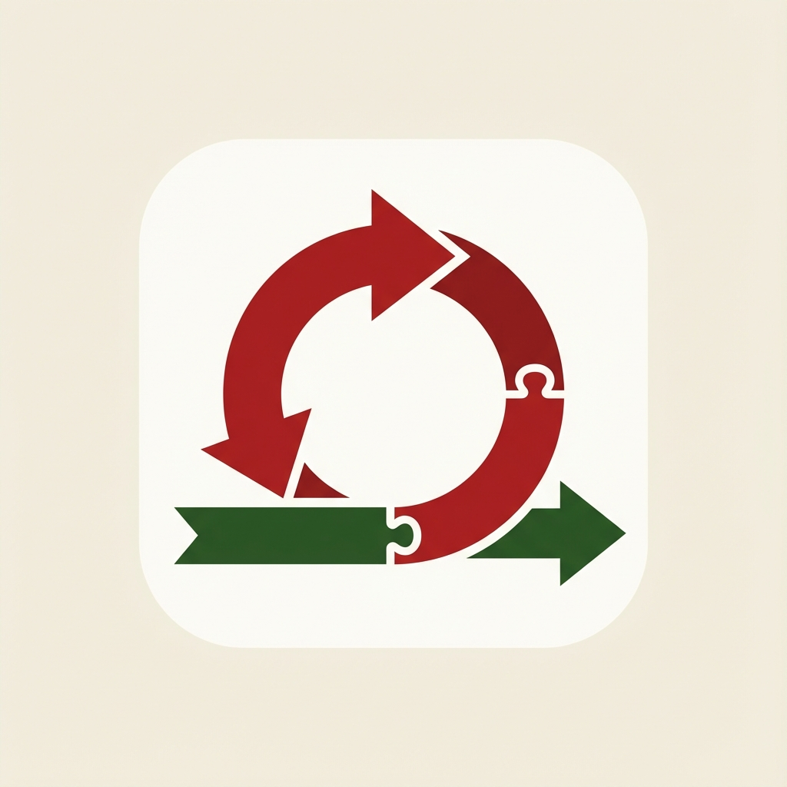
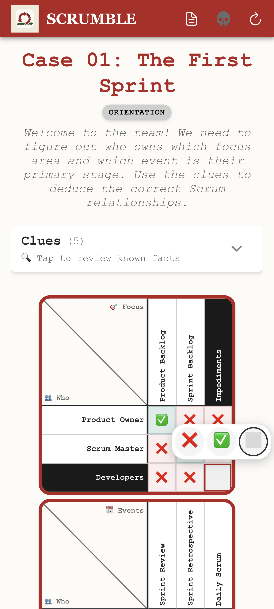
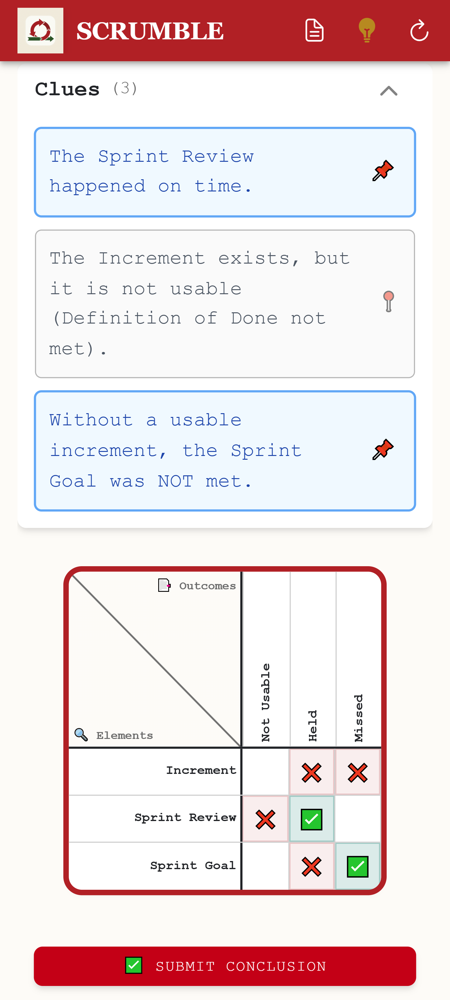
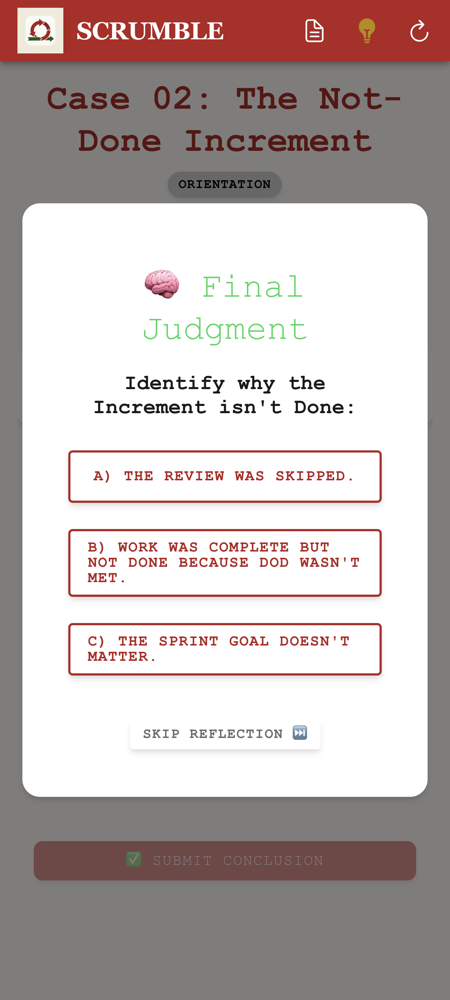
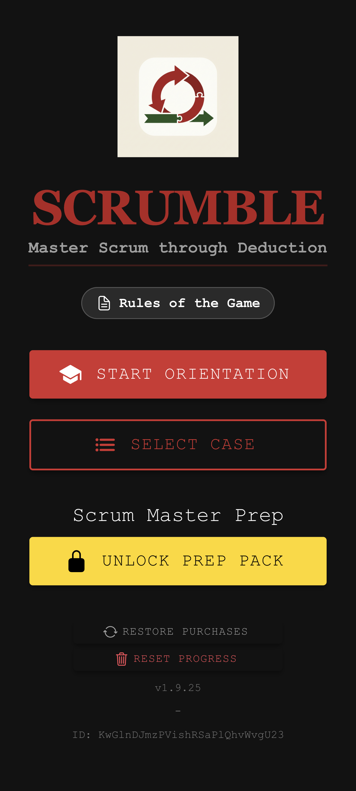
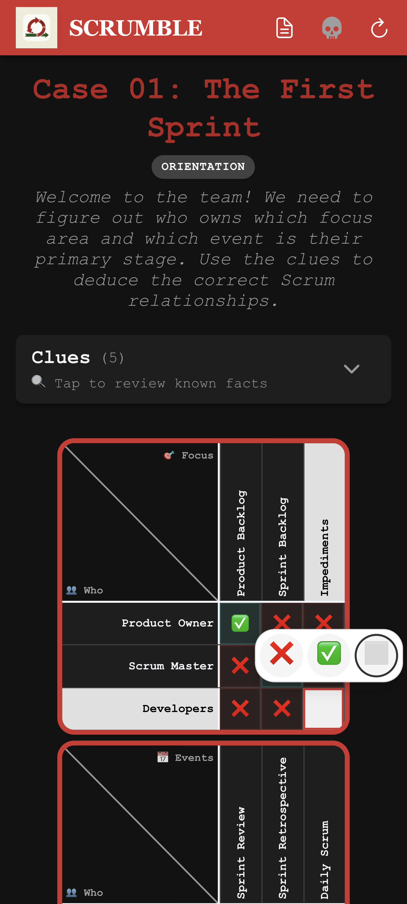

Master Scrum through Deduction
A logic-grid puzzle game for future Scrum Masters or Puzzle Fans
Logic Grid Puzzles
Solve complex scenarios by deducing relationships between events, artifacts, and roles.
Coach & Dread Modes
Learn with hints in Coach mode, or face unforgiving logic in Dread mode.
PSM I / CSM Exam Prep
Designed to reinforce the foundational knowledge required for certification.
Memorization is insufficient for true mastery. The Scrum Guide is brief, but its application requires deep contextual reasoning.
SCRUMBLE isn't a test—it's a reconstruction. By deducing relationships from fragmented clues, you build the robust mental models required for real-world agility. Stop memorizing. Start deducing.
Mission-Ready Interface
Master the framework in any environment with native Dark Mode support and intuitive logic-grid controls.





Unlock the Scrum Master Prep Pack
Access advanced case files and test your understanding of roles, events, artifacts, and edge cases that appear on the Professional Scrum Master™ I (PSM I) and the Certified ScrumMaster® (CSM®) exam. A single, one-time procurement to elevate your skills.
Available for purchase within the SCRUMBLE app